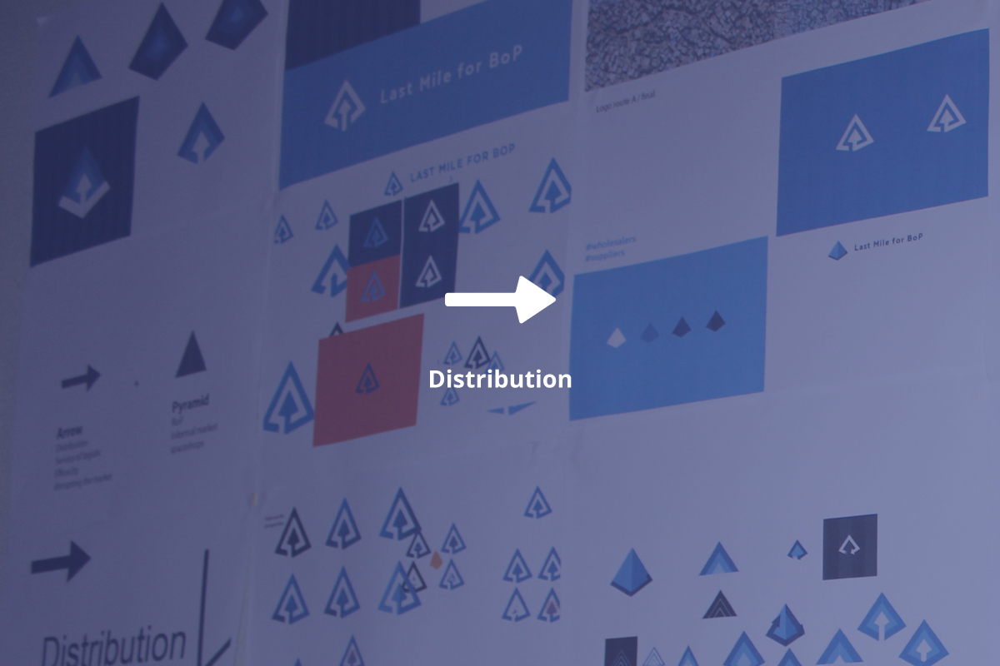
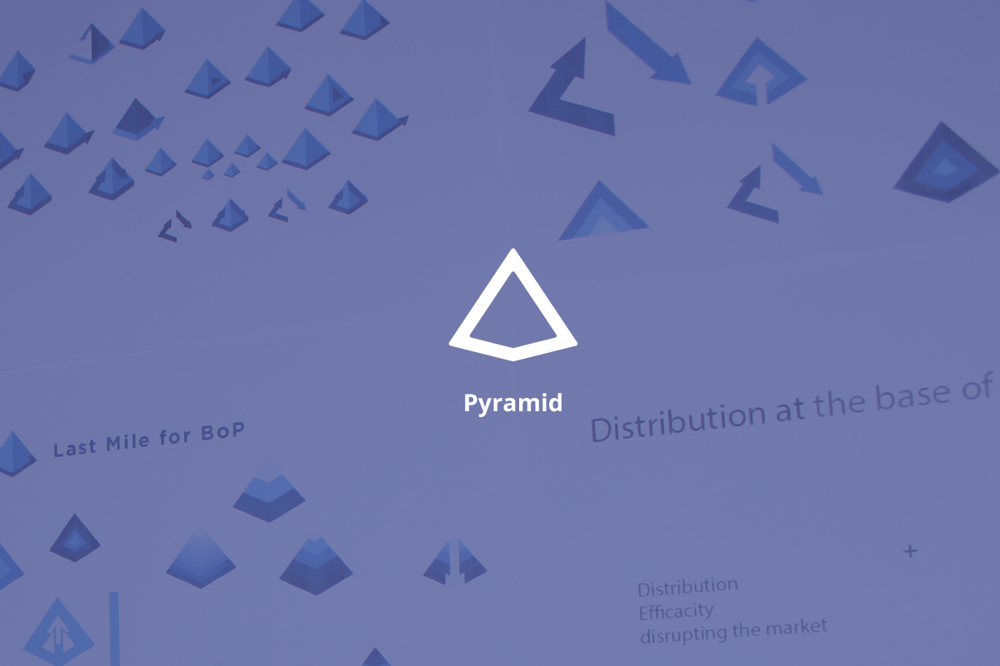
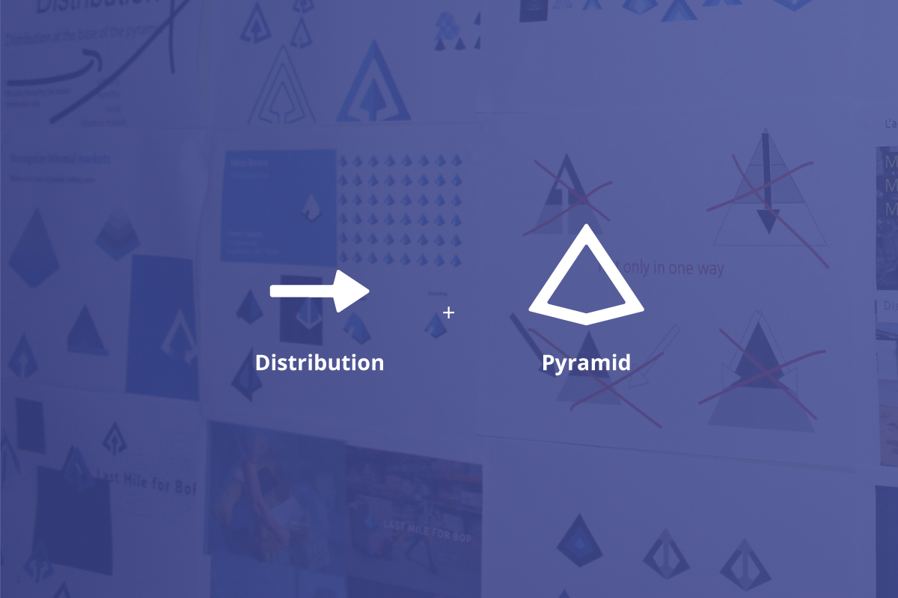
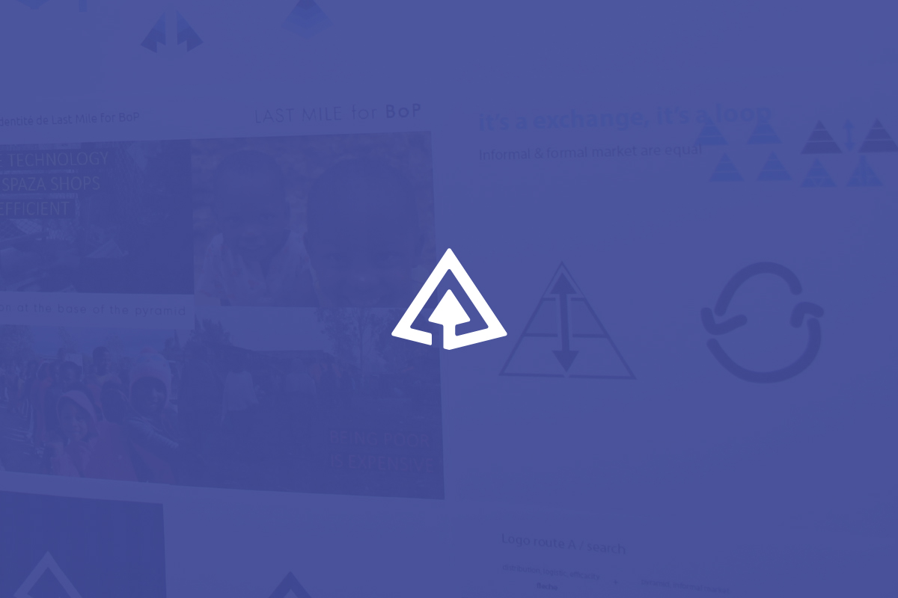
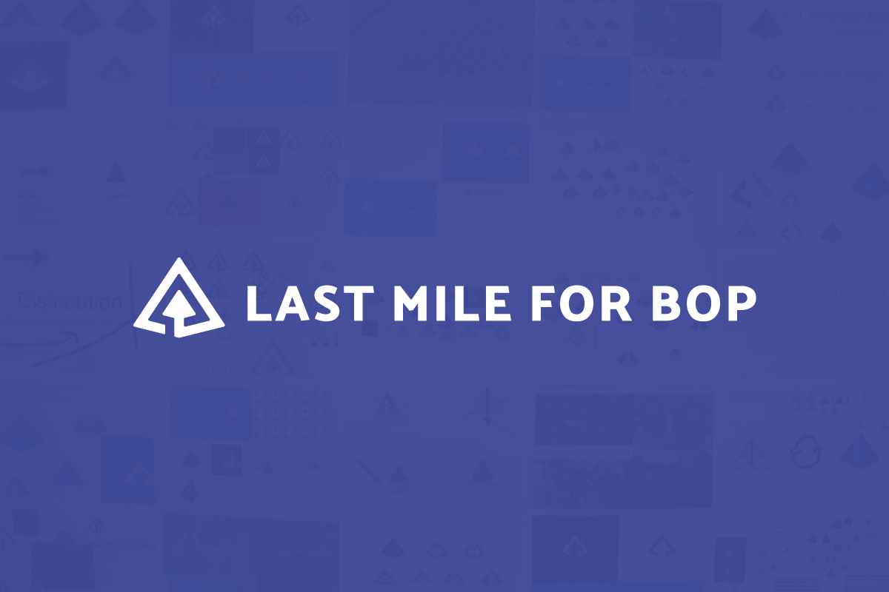
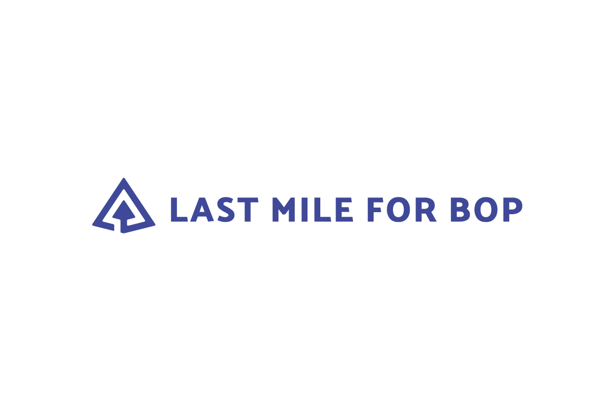
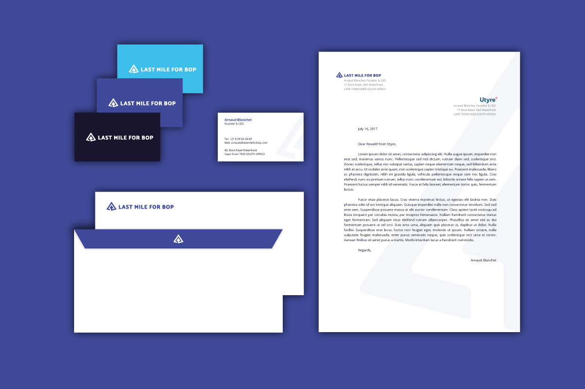
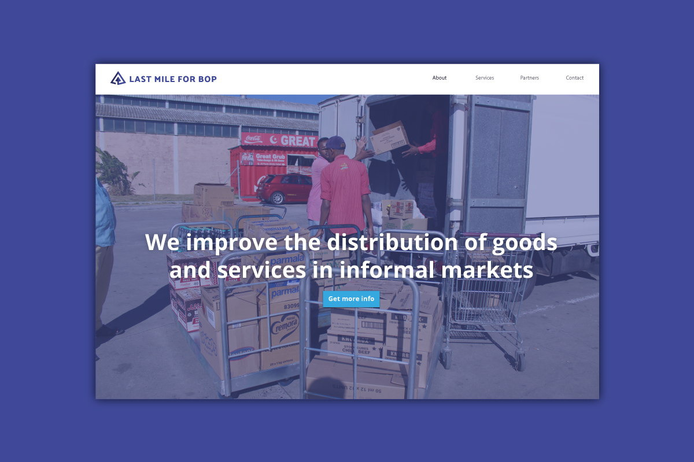
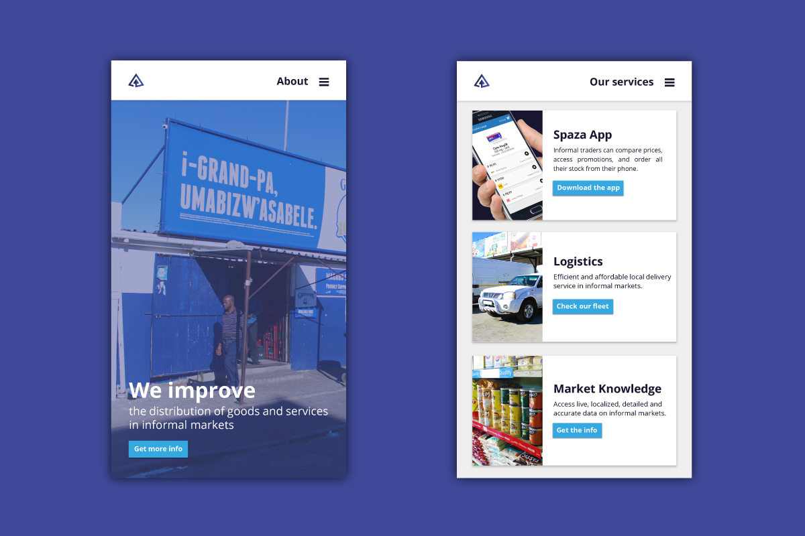
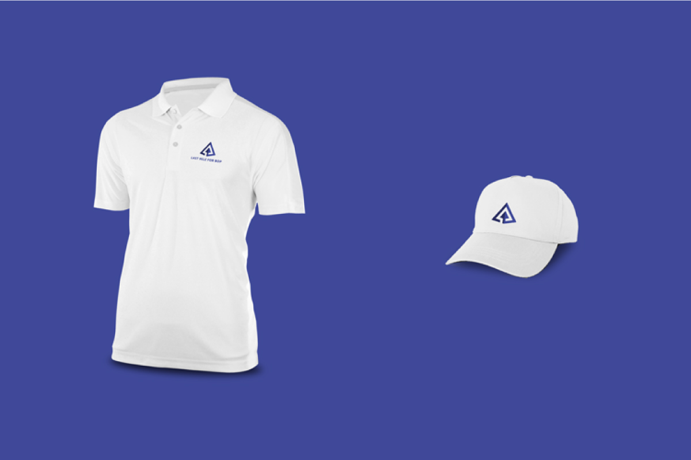
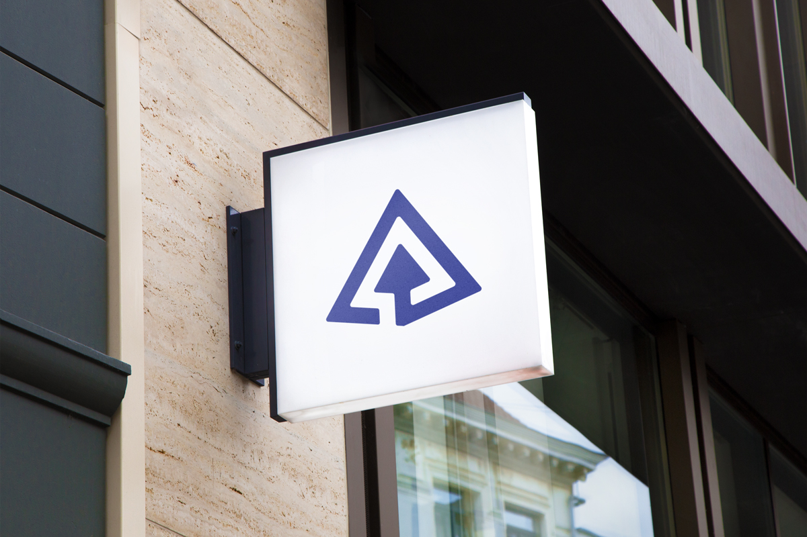
Last Mile For Bop
Refonte d'identité graphique
De Décembre 2016 à Mars 2017, j'ai réalisé un volontariat de 3 mois chez Last Mile For Bop en tant que Graphiste et UI-UX Designer. Le but de cette startup Sud-Africaine étant d'améliorer la distribution de produits et services abordables au sein des communautés où le revenu quotidien est inférieur à 2 dollars (bop = base de la pyramide) en modernisant les épiceries informelles (nommées Spazashops).
Pourquoi refondre l'identité ?
Depuis sa création en 2013, la startup a beaucoup évolué et le temps a fait évoluer ses objectifs. Avec son directeur, nous avons conclu qu'il était temps de revoir l'identité graphique de Last Mile For Bop : une nouvelle image en 2017 adaptée à ses valeurs et ses objectifs, ainsi que ses clients.